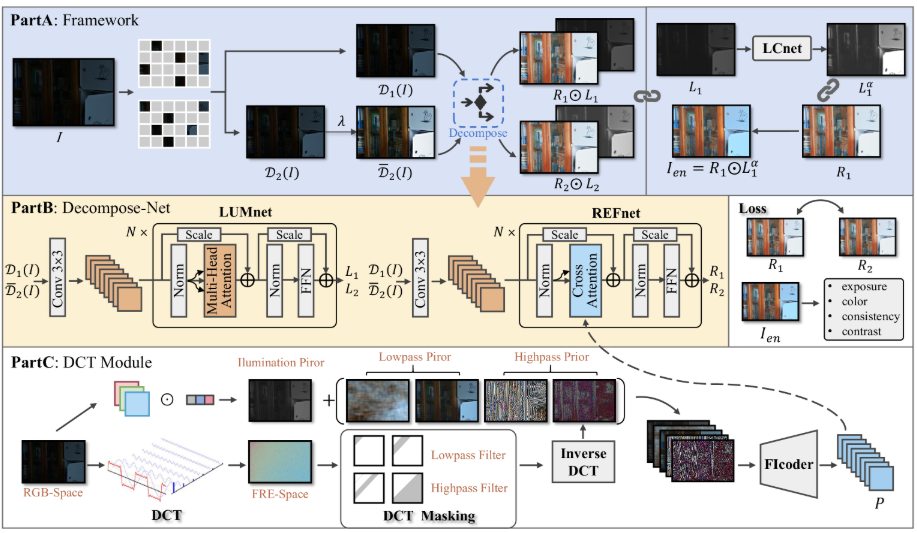

ICLR 2025
Interpretable Unsupervised Joint Denoising and Enhancement for Real-World Low-Light Scenarios

Abstract
Real-world low-light images often suffer from local overexposure, low brightness, noise, and uneven illumination. We propose an interpretable, zero-reference joint denoising and low-light enhancement framework grounded in physical imaging principles and Retinex theory. A DCT-based frequency decomposition and implicit-guided hybrid representation separate compounded degradations, while an implicit degradation representation guides the retinal decomposition network.
At a glance
Evaluated on LOLv1, LOLv2-Real, SICE, and SIDD, the method targets enhancement and denoising together without paired reference images during training. See the paper for complete metrics, evaluation protocols, and ablations.
Citation
@inproceedings{li2025interpretable,
title={Interpretable Unsupervised Joint Denoising and Enhancement for Real-World Low-Light Scenarios},
author={Li, Huaqiu and Hu, Xiaowan and Wang, Haoqian},
booktitle={International Conference on Learning Representations},
year={2025}
}